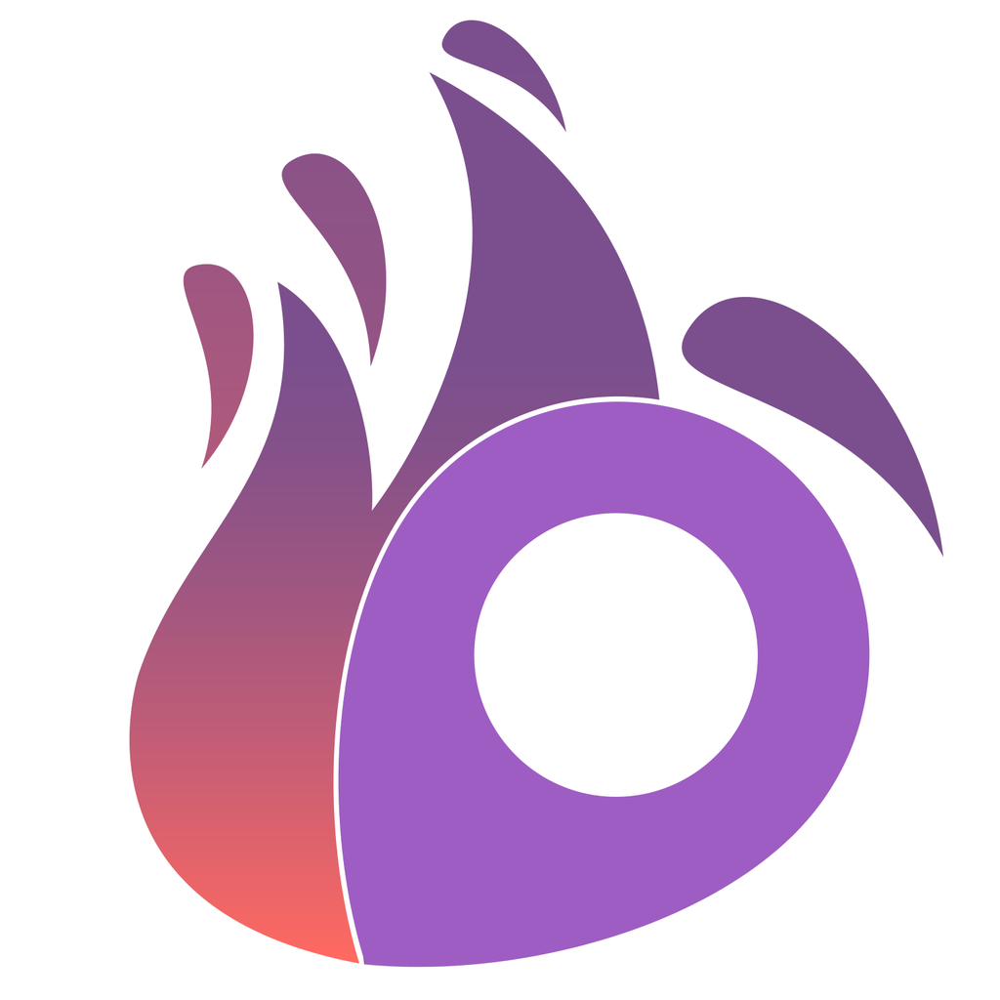
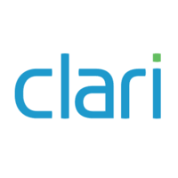

shekar ramaswamy
Currently working on a way to make social media a healthier place for communities to share their unfiltered thoughts.
I'm also resarching natural language translation to database queries as a sophomore at Brown University. Affiliated with Sequoia Capital as well.
I'm interested in design, database systems, NLP, and machine learning.
I have lived in Cupertino, CA for my entire life. My hobbies include learning about ways to leverage the worlds natural energy, weight lifting, and going for walks.
shekar@ramaswamy.org

I have lived in Cupertino, CA for my entire life. My hobbies include learning about ways to leverage the worlds natural energy, weight lifting, and going for walks.
shekar@ramaswamy.org
Now

Founder of what's poppin?, since February 2017
what's poppin? is bridging the gap between hyperlocal content and anonymous social media, fostering an online community of unfiltered feelings and filling the need for a safe haven for college and high school students alike. Check out our website.
what's poppin? is bridging the gap between hyperlocal content and anonymous social media, fostering an online community of unfiltered feelings and filling the need for a safe haven for college and high school students alike. Check out our website.
Past
Pocket Gems, Summer 2018
Worked on the LiveOps team of War Dragons, where I implemented a better way for teammates to interact with one another through daily quests.
Tools/Languages used: Python, AngularJS, Google Cloud services
Worked on the LiveOps team of War Dragons, where I implemented a better way for teammates to interact with one another through daily quests.
Tools/Languages used: Python, AngularJS, Google Cloud services
Natera, Summer 2017
Helped transition and reoptimize Natera's codebase from Matlab and R to Python and Java in order to gain insights into how to more accurately detect genetic diseases in unborn babies from mother's blood samples.
Tools/Languages used: Python, Matlab, Java, R
Helped transition and reoptimize Natera's codebase from Matlab and R to Python and Java in order to gain insights into how to more accurately detect genetic diseases in unborn babies from mother's blood samples.
Tools/Languages used: Python, Matlab, Java, R

Clari, Summer 2016
Wrote algorithms to help the engineering and customer success team understand how Clari's customers were leveraging various aspects of their products.
Tools/Languages used: Java, Javascript, MongoDB, Python, JQL, Slack/Mixpanel APIs
Wrote algorithms to help the engineering and customer success team understand how Clari's customers were leveraging various aspects of their products.
Tools/Languages used: Java, Javascript, MongoDB, Python, JQL, Slack/Mixpanel APIs